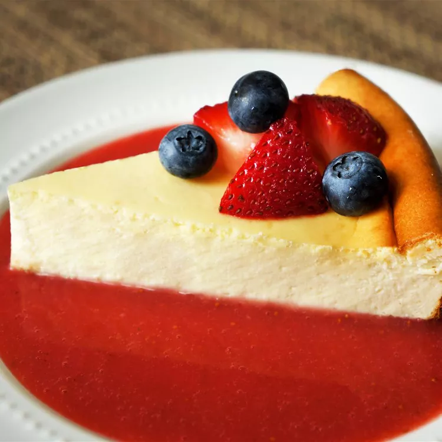

New York-Style Cheesecake

Description
A larger and richer variant of traditional cheescake that'll quickly become a go-to dessert for whomever you make it for.
Ingredients
- 18 graham crackers, crushed
- 3 tablespoons melted butter
- 1 cup sour cream
- ¼ cup all-purpose flour
- 1 tablespoon vanilla extract
- 4 (8 ounce) packages cream cheese
- 1 ½ cups white sugar
- ⅔ cup milk
- 4 large eggs
- 1 teaspoon finely grated lemon zest
- 1 teaspoon finely grated orange zest
NOTE: Yields 1, 9-inch cheesecake
Steps
- Make the crust and press it into a prepared springform pan
- Make the filling and pour it over the crust
- Bake until the edges are puffed and the center is slightly jiggly
- Let the cheesecake cool in the oven
Home